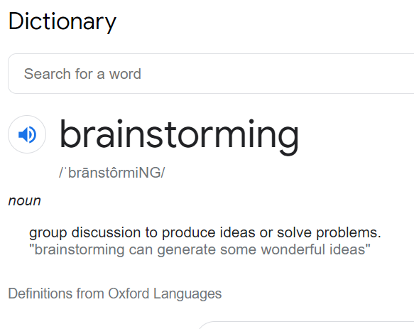

We are not super smart so we take notes
- A space where people share the knowledge they came with and the knowledge that they have gained to help each other out in a jam. ((i.e. group brainstorming sessions when someone is stuck))
CREATE A SENSE OF BRAINSTORMING((?)): what exactly is brainstorming and how does that all work
- google search = brainstorming takaways:

1.1 (article link)
- Brainstorming is a group creativity technique by which efforts are made to find a conclusion for a specific problem by gathering a list of ideas spontaneously contributed by its members. In other words, brainstorming is a situation where a group of people meet to generate new ideas and solutions around a specific domain of interest by removing inhibitions.((BRAINSTORM DAY OR BRAINSTORM HOUR?)) People are able to think more freely and they suggest as many spontaneous new ideas as possible. All the ideas are noted down without criticism and after the brainstorming session the ideas are evaluated. The term was popularized by Alex Faickney Osborn in the 1967 book Applied Imagination.
2.1 (article link)
- Creativity techniques are methods that encourage creative actions, whether in the arts or sciences. They focus on a variety of aspects of creativity, including techniques for idea generation and divergent thinking, methods of re-framing problems, changes in the affective environment and so on. They can be used as part of problem solving, artistic expression, or therapy.
3.1 (article link)
4.1 (article link)